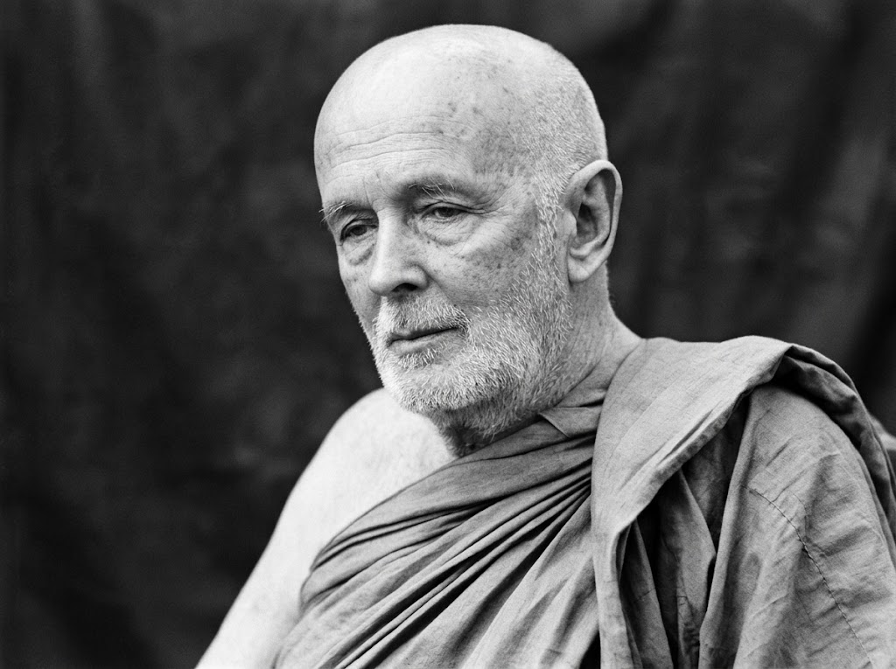
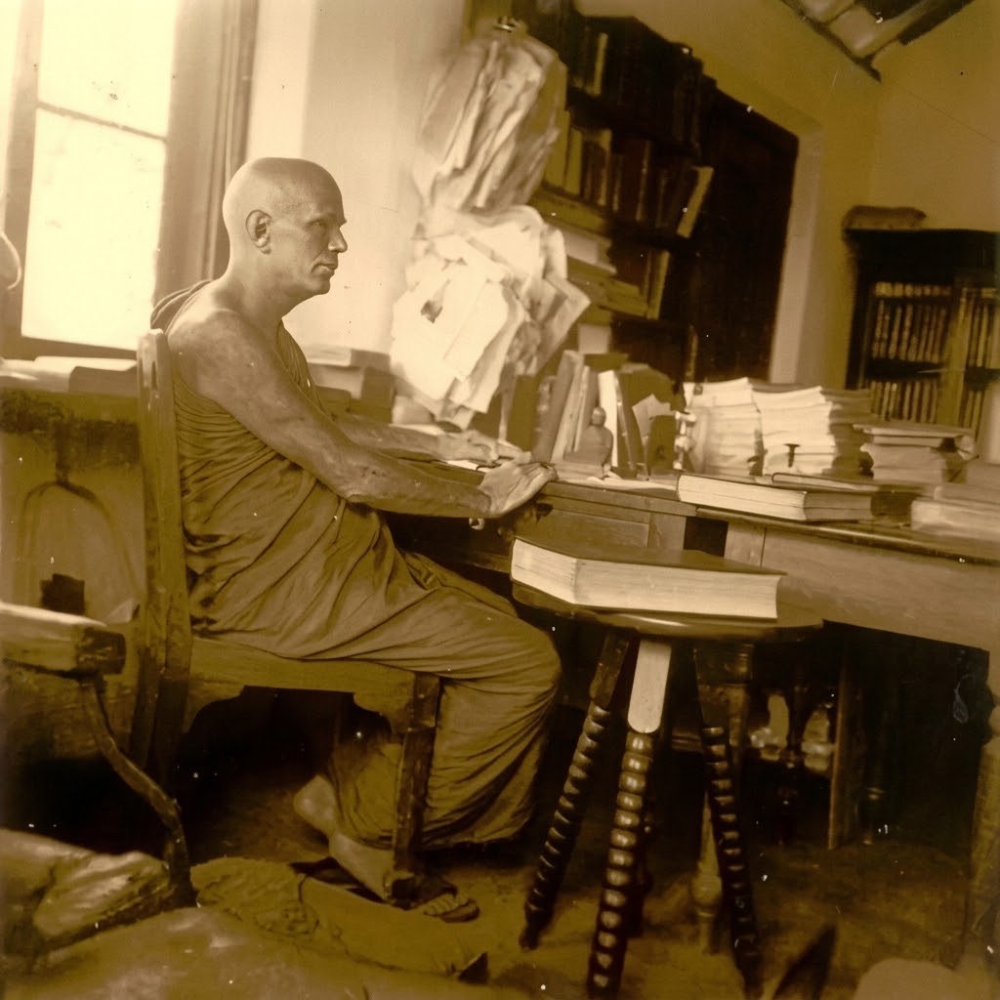
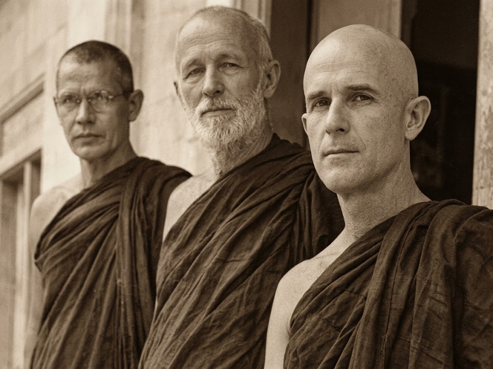
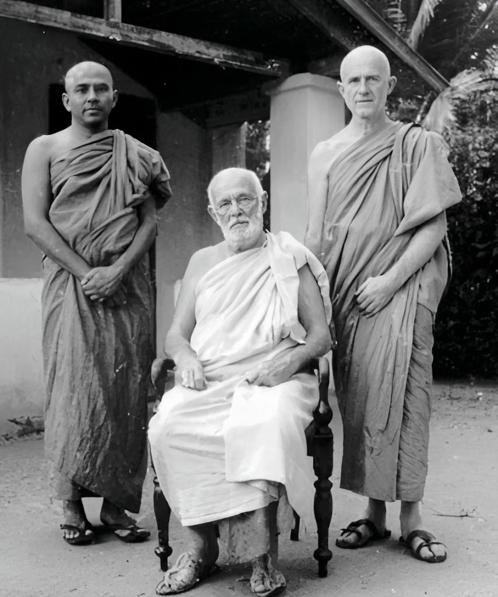
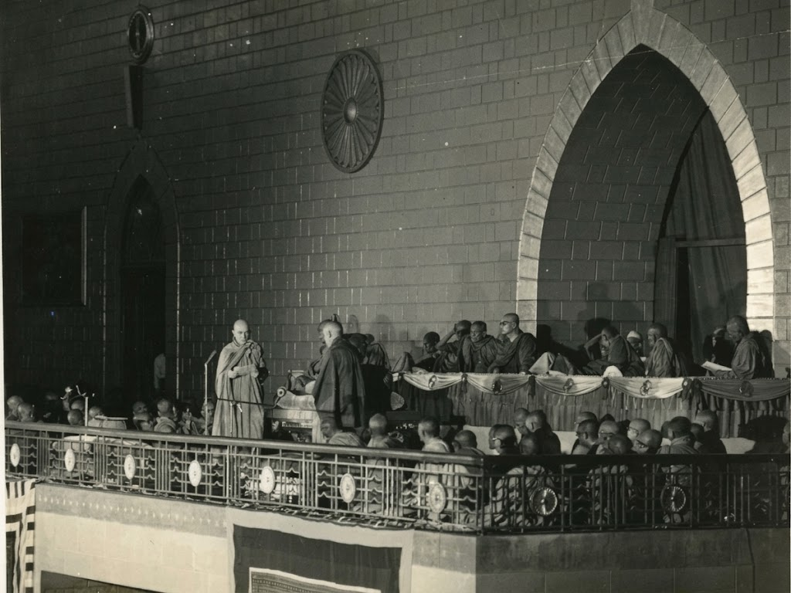
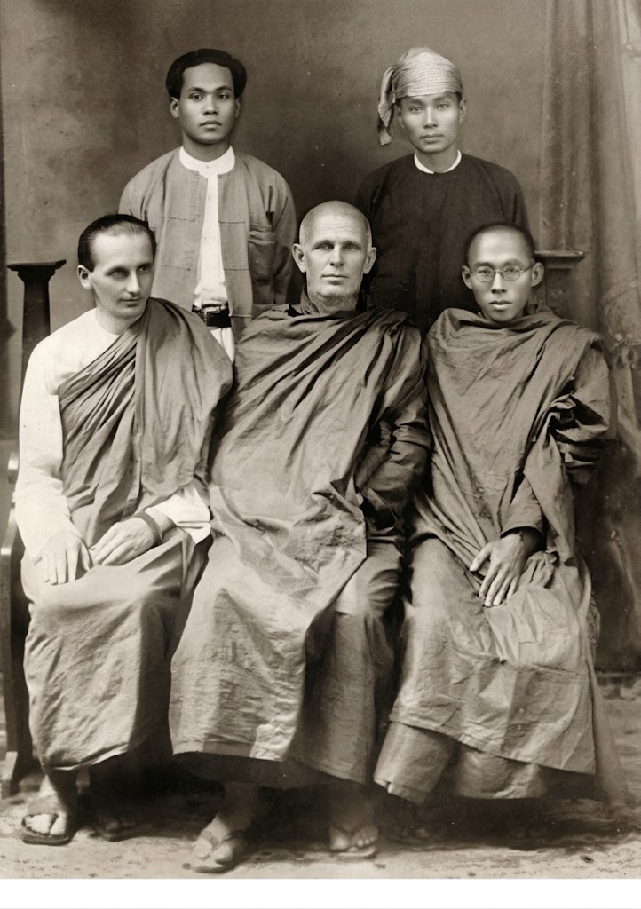
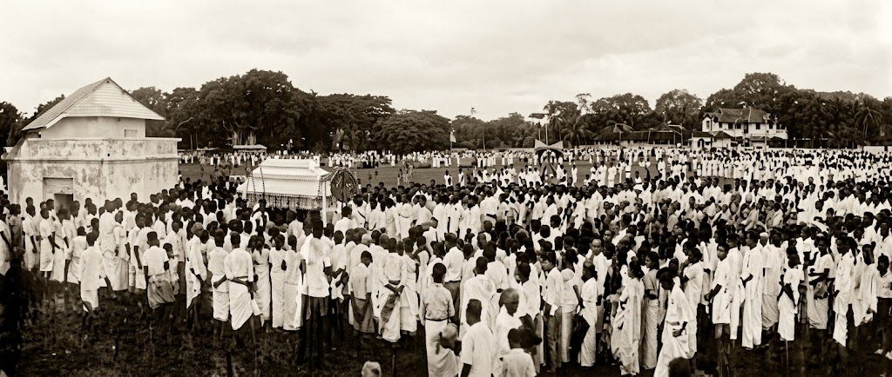
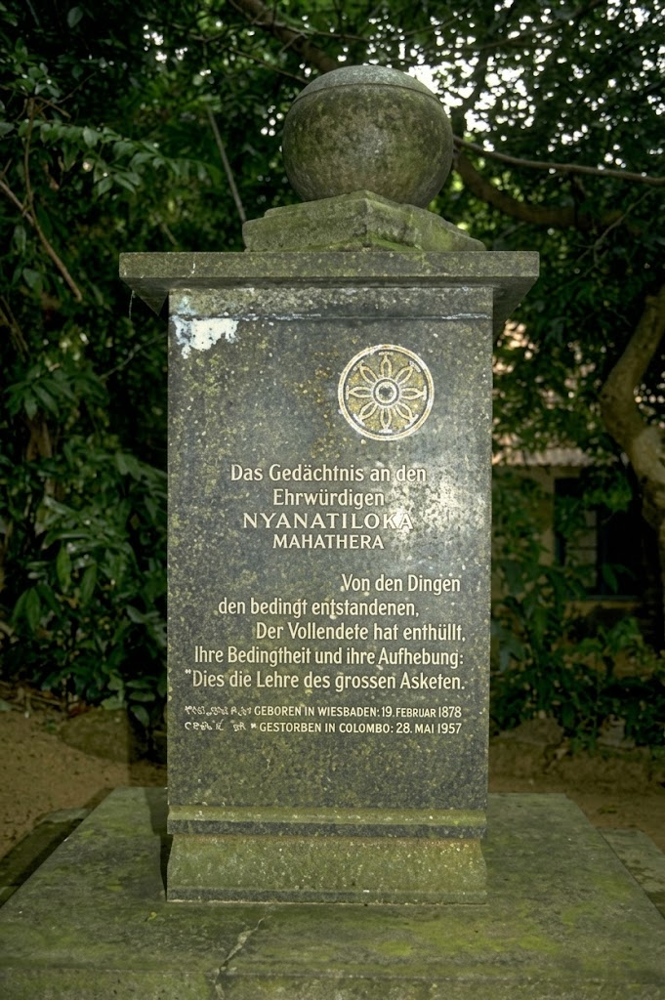
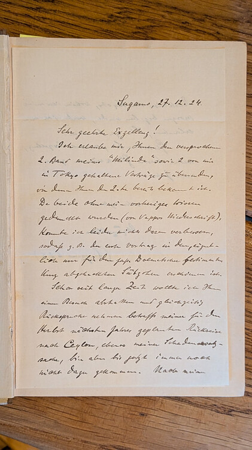
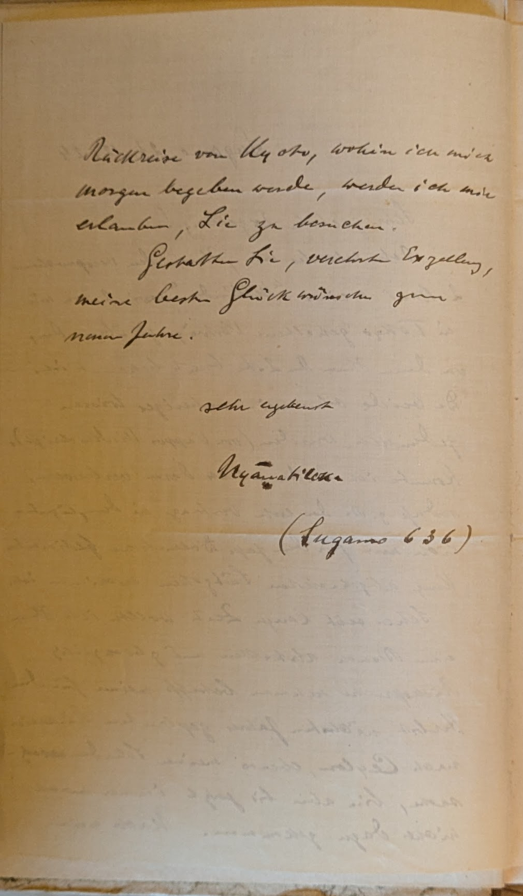

The Life and Dhamma Legacy of Ven. Nyanatiloka

Most Venerable Nyanatiloka Mahathera (born Anton Walther Florus Gueth on February 19, 1878, in Wiesbaden, Germany) was a towering figure in modern Buddhist history. As the first continental European to enter the Theravada Buddhist monastic order, his profound erudition, linguistic genius, and ascetic purity bridged Eastern wisdom and Western thought for over five decades.
Early Life & The Musical Soul
Anton Gueth was the son of a municipal school principal. In his youth, he demonstrated extraordinary musical talent as a violinist and composer, studying at the prestigious Hoch Conservatory in Frankfurt and the Royal Academy of Music in Munich. Despite a brilliant musical career ahead, he felt a spiritual dissatisfaction with European materialism. Reading Arthur Schopenhauer introduced him to Buddhist philosophy, igniting an unshakeable thirst to seek the living Dhamma in the East.
Ordination in Burma (1903 – 1904)
Traveling overland through India, Anton arrived in Rangoon, Burma. In 1903, he took novice ordination (Pabbajja) under the Irish monk Ven. U Dhammaloka. In 1904, he received higher ordination (Upasampada) as a Bhikkhu with the Dhamma name Nyanatiloka ("Light of the Three Worlds"). He became the first European-born Theravada Bhikkhu on the continent of Asia.
Founding of Polgasduwa Island Hermitage (1911)
In 1905, Ven. Nyanatiloka journeyed to Ceylon (Sri Lanka), longing for a secluded sanctuary suited to intense meditation and Pali canonical translation. Guided by local devotees in Dodanduwa, he was shown the uninhabited islands in Ratgama Lake. Instantly captivated by their peaceful isolation and lush mangrove canopy, he secured Polgasduwa Island on July 9, 1911 with the generous assistance of Mr. William Mendis Wijesekera.
Here, he established the Island Hermitage, creating small individual thatched and clay-tiled kutis where monks could live in deep silence, study the Pali Tipitaka, and practice Vipassana meditation.
"He who has found the truth does not fear solitude; for in solitude the highest reality is revealed."— Ven. Nyanatiloka Mahathera, Notes from Island Hermitage
Monumental Literary Contributions
Ven. Nyanatiloka's scholarship remains foundational to world Buddhist studies. Among his greatest masterpieces:
- The Word of the Buddha (1906): The first systematic anthology of canonical teachings arranged under the Four Noble Truths, translated into over twenty languages worldwide.
- Buddhist Dictionary (1950): A seminal manual defining technical Pali terms and doctrines with razor-sharp canonical precision.
- Guide Through the Abhidhamma Pitaka: The first comprehensive Western analysis of all seven treatises of the Buddhist psycho-philosophical canon.
- German Translations: Complete German translations of the Milindapañha, Visuddhimagga, and the Anguttara Nikaya in five volumes.
Service of Ven. Nyanatiloka Maha Thera in Establishing the Buddha Sasana in Germany

Pioneering Patron of the German Dharmaduta Society (GDS)
Ven. Nyanatiloka Maha Thera, who had lived as a Theravada monk in Sri Lanka for 53 years, served as the first Patron of the German Dharmaduta Society (initially founded as the Lanka Dhammaduta Society in 1952 by Asoka Weeraratna). His spiritual standing and monastic experience provided vital authority and grounding to the revival movement aimed at planting the Buddha Sasana firmly in post-war Germany.
Language and Dharmaduta Training for Monks
To ensure that Dharmaduta missions to Europe would communicate effectively, Ven. Nyanatiloka Maha Thera—together with his pupil, Ven. Nyanaponika Thera—undertook the responsibility of teaching the German language and cultural context to Sri Lankan monks. This preparatory training made it possible for the Buddhist monks sent overseas to conduct lectures, explain the Dhamma, and guide meditation directly for German seekers.
Institutional and Scholarly Foundation
Ven. Nyanatiloka’s leadership at the Island Hermitage (Polgasduwa, Dodanduwa) maintained strong ties with early German Buddhist groups, including connections with Dr. Paul Dahlke and Das Buddhistische Haus in Berlin (founded in 1924). His translation work, monastic standard, and guidance bridged the gap between traditional Theravada orthodoxy and early European intellectuals, creating the literary and monastic foundation that allowed Asoka Weeraratna’s later establishment of the Berlin Vihara to take root.
Mentorship of Western Monks and Dharmaduta Figures
At the first Training Centre of the German Dharmaduta Society in Dalugama, Kelaniya (1953), Ven. Nyanatiloka played an active guiding role alongside senior monastics such as Ven. Nyanaponika, Ven. Galle Anuruddha, Ven. Kudawella Wangissa, and Upasaka Friedrich Möller (who later ordained as Ven. Polgasduwe Nyanawimala Maha Thero). By mentoring both Western and Ceylonese monastics, he helped cultivate the spiritual ambassadors who carried the Dhamma to Germany during the historic 1956 Buddha Jayanthi era.
State Funeral & Eternal Reverence
In recognition of his monumental contributions to the Buddha Sasana and Sri Lanka's heritage, Ven. Nyanatiloka was awarded distinguished Sri Lankan citizenship in 1950. When he passed away in Colombo on May 28, 1957, at the age of 79, Prime Minister S.W.R.D. Bandaranaike and the government declared a State Funeral with full national honors. Tens of thousands gathered at Independence Memorial Square in Colombo to pay their final respects.
Today, his memory lives on on the tranquil island of Polgasduwa, where his kuti, library, and the living forest lineage continue to shelter earnest seekers of Nibbana.
Photographic & Archival Gallery of Most Ven. Nyanatiloka
A rare visual journey documenting the monastic life, international gatherings, handwritten correspondence, Sixth Buddhist Council address, and state cremation of Most Venerable German Nyanatiloka Mahathera. Click any photo to view in full resolution.

Ven. Ñāṇatiloka Mahāthera, 1936
Portrait taken in Sri Lanka during the height of his canonical translation work at Island Hermitage.

Island Hermitage (1952)
Ven. Ñānaloka, Ven. Ñāṇatiloka, and Ven. Ñāṇaponika at the Island Hermitage, Dodanduwa.

Udawattakele, Kandy (1956)
Ven. Piyadassi Thera of Vajirarama, Most Ven. Ñāṇatiloka, and Ven. Ñāṇaponika.

Sixth Buddhist Council, 1954
Ven. Ñāṇaponika reading out Most Ven. Ñāṇatiloka’s address at the opening assembly in Rangoon, Burma.

Mandalay, Burma (1929)
Historic congregation with Maung Maung Hwin, U Kyaw Hla, Ven. Lama Govinda, Ven. Ñāṇatiloka, and Ven. Adinavaysa.

State Cremation, June 2, 1957
National state funeral procession and cremation for Most Ven. Ñāṇatiloka at Independence Square, Colombo.

Memorial Stupa & Tombstone
The sacred monument enshrining the relics of Most Ven. Ñāṇatiloka on Polgasduwa Island.

Handwritten German Note
Authentic personal note from Ven. Nyanatiloka, beautifully hand-written in German script.

Monastic Signature
The official hand-signed signature and seal of Most Venerable German Nyanatiloka Mahathera.